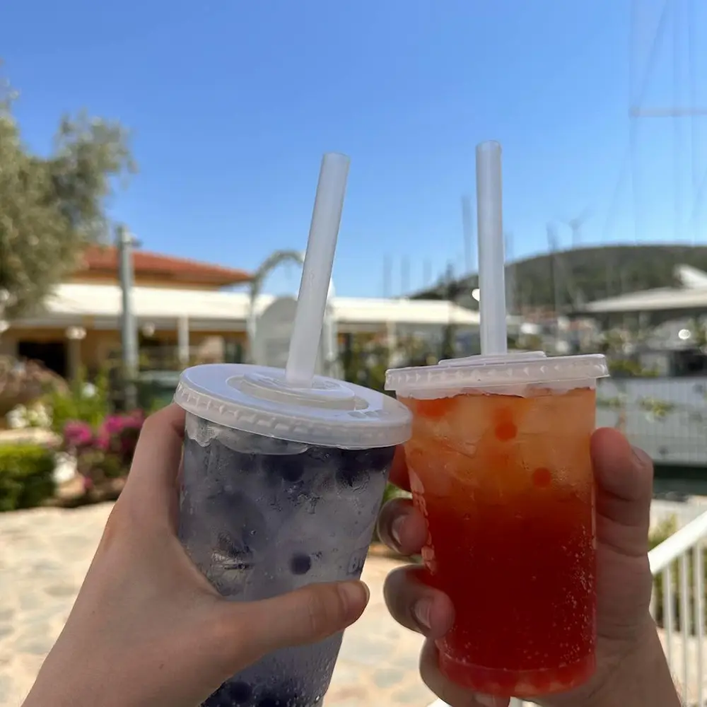
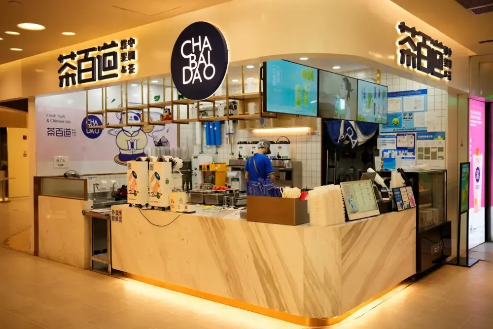

文章 / 飲品配方與資訊
How popular is bubble tea anyways?
這篇是英文原文，尚未完成繁體中文翻譯。中文選單與相關商品連結不會切回英文介面。

查看英文原文（尚未翻譯）
Bubble tea has been a rising new star in the beverage scene worldwide, and sure enough there’s still new brands popping up here and there amongst the old guards.
However, some have argued that boba tea has since gone past its heyday, with the Covid pandemic torpedoeing any momentum for the drink to reach higher heights.
Is the bubble tea train slowing down these days, or is it still alive and kicking? Let’s find out!
Bubble tea in Taiwan
With this question, it’s only fair to start with its birthplace – Taiwan!
Here, boba tea has become more than a simple fad or trend, but rather a part of everyday life. It’s common to find the drink just round the corner, be it mom-and-pop stalls or one of the many chain brands on the island.
Back in 2021 there was a whopping 26255 bubble tea shops in Taiwan, with sales tripling over the past decade. It’s even estimated that Taiwanese people sip on 1.02 billion (!) cups per year!
It certainly helped that Taiwan was spared the wide-scale lockdowns seen in other countries during Covid. Although foreign visitors were barred from entering the island, the bustling local market meant it was business as usual for bubble tea shops.
However, just because it’s so common doesn’t mean that it’s become stagnant – but rather the opposite! With such high competition in the market, many brands have to brainstorm new combinations and gimmicks to stay on top.
From new toppings and sinkers to think-outside-the-box flavours, Taiwan is where the latest in boba tech happens!
Bubble tea in China
Meanwhile, just across the strait bubble tea is also thriving in mainland China. This is with good reason – the large population and potential market is just too good to ignore.
In 2022, there were more than 400 thousand boba outlets in the country. This number is still rising over the years to boot!
Some popular brands such as Heytea and Nayuki’s Tea even made it to overseas, or even Taiwan itself!
However, the drink is not without its challengers. With a viral boost thanks to social media such as XiaoHongShu, yogurt-based drinks have become the latest fad in China.
Yet you can still argue that these drinks still follow the footsteps of bubble tea, just replacing the base drink with yogurt instead.


Southeast Asia
With such sweltering weather year-round, no wonder boba tea would be a hit in Southeast Asia! According to studies, Southeast Asians spend over 3 billion USD on bubble tea per year.
Indonesia is the largest market in the area, followed closely by Thailand with over 30,000 outlets in the country. Meanwhile, the boba scene in Vietnam, Singapore and Malaysia are also going strong!
Although many brands in Taiwan and Mainland China have enjoyed success in the area, there are still some grassroots brands too. For example, Each a Cup is one of the earliest local brands in Singapore. Now it runs over 50 locations in the country.
Boba in the west
While the drink is still going strong over in the East, what about the West?
North America
Even in the post-Covid years, the region is still a powerhouse in the bubble tea market worldwide. In 2023, the size of the US market alone was estimated to be US$ 464.3 million, and is forecast to keep growing over the next decade. In fact, the North American market is the second largest in the world, just after Asia!
Much like Taiwan, bubble tea in the US is a mix of large brands and smaller tea shops. As of last year, there are over 6000 boba businesses in the US.
Kung Fu Tea alone has over 300 outlets across the country. Meanwhile, Quickly, one of the earliest players in the market, still has over 100 outlets in the US.
Aside from homegrown brands, you’ll also find brands from Taiwan setting up shop there too.
You’ve probably heard of The Alley and Tiger Sugar, but Coco, Gong Cha and Sharetea are all brands that started in Taiwan!
Europe
The European market may be smaller than in North America, but it’s certainly no slouch either. In 2022 it generated a revenue of over 580 billion USD, and takes up 21.2% of the global market.
With an annual growth rate of nearly 9%, it should nearly double in around 2030!
Being a tea-drinking nation amongst the coffee-drinkers in the continent, naturally young Brits have taken to the drink like fish to water. With a growing immigrant population, this drink is both a non-alcoholic option and a taste of childhood rolled into one.
Some leading brands boast over 100 locations in the country, and even local cafe chain Costa coffee began offering bubble tea during summer!
After tea-loving Britain, Germany and France are also new growing markets prime for tapping into. Germany’s market now closely rivals Britain’s at USD 148.6 billion, and France’s would soon catch up in the upcoming years.
But what about Covid?
It’s only a matter of time before we address the elephant in the room, doesn’t it?
Lockdown measures worldwide has impacted a lot of businesses big and small, and bubble tea is no exception. However, it had fared better compared to other restaurants and cafes. In fact, there was a bigger bubble tea boom after the pandemic, to the point that there was a tapioca pearl shortage!
For one, boba tea shops are relatively simple to set up than restaurants, thanks to the smaller menu and resources needed. Newcomers can set up shop more easily, while tea shop owners would bounce back quicker from the slump than other businesses.
Delivery apps and services are the norm during lockdown, which is perfect for this market as it’s already takeaway-based in nature. Even after opening up, ordering milk tea online is still popular in some countries due to its sheer convenience!
Meanwhile, bubble tea at home has become a thing too! DIY boba tea kits are all the rage on ecommerce sites such as Amazon, and ready-to-drink bottled/canned boba have hit retail shops as well. Between deliveries and homemade boba tea, there’s no shortage of options for people craving a cuppa.
Is it still popular?
Despite what naysayers wants you to think, the bubble tea market is here to stay – and exploding in popularity! Nevertheless this is still a cut-throat scene, and you’ll need to innovate to keep up with your competition.
Luckily we’re here to help! Want to add any new drinks to your menu? Let’s brainstorm!